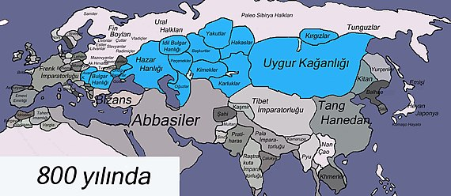

Orta Asya
Yazar:
Tarih:

820: Uygurların Tibetlileri püskürtmesi
832: Uygur Kağanlığı'nın kargaşaya sürüklenmesi
840: Kırgızların saldırısı sonucu Uygur Kağanlığı'nın yıkılması...

Türk Tarihi hakkında daha fazla bilgi için buraya tıklayın